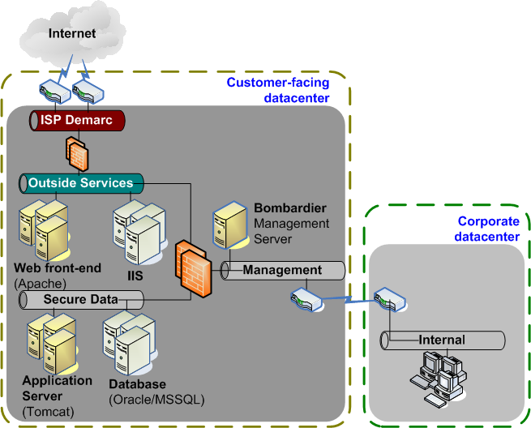

Let’s learn by example. Refer to the diagram below for what the network will look like in general. If your network doesn’t look exactly like this, don’t worry. Interpret the instructions for your environment.
In this example, we’re going to take a network as shown above and configure all the servers on it for SNMP.
We’ll assume you have Bombardier installed on the Bombardier Server already. If not, please read the installation guide.
Where to get help
If you’re having trouble going through this tutorial, please post a question to launchpad to interact with other Bombardier users who might be able to help.
The core of the Bombardier system is the Bombardier Package. To do anything in Bombardier, you create a package. So we’ll create one to manage the SNMP configuration on a machine under our control. In this example, this package will work on a Redhat Enterprise Linux 5 server or a Centos 5 server. If you don’t have one of these available, you may have to modify this package to fit your configuration.
A package starts with a definition file, which is nothing more than a simple human-readable text file which lists the binary (installable) files with a set of instructions (scripts) that install, configure, verify, and uninstall those binary files onto a given machine. The format of this file is yaml (or JSON), and should be pretty intuitive. We chose this format over XML because, as the JSON site says, “it is easy for humans to read and write. It is easy for machines to parse and generate.”
The first step is to create this package definition on your Bombardier server using the bombardier command-line interface:
peacemaker (admin)> create package SnmpConfig
at which point, the CLI will open an editor screen and allow you to enter the configuration data for your package. When creating a new package, Bombardier provides an outline of the minimum configuration items that you’re going to need to define:
class_name: Module.Class
dependencies: []
injectors: {}
libs: {}
package-version: 5
release: 0
~
~
Setting your editor
The bombardier cli will use vim as the default editor because it’s powerful and ubiquitous. However, there are a lot of people who don’t like vim. We can sympathize with this point of view, since we can still remember when vim was frightening. If you prefer using a different editor, create a file in your home directory called .bdr_config, and put an entry on its own line, as follows: editor: /path/to/editor.
Before going on with our example, a few words about what the metadata entries mean.
| dependencies: | This is a list of packages that must be installed before this package can be installed. When deploying a number of packages to a remote machine, Bombardier will ensure that all dependent packages are installed prior to those packages that are dependent upon them. |
||||||
|---|---|---|---|---|---|---|---|
| priority: | The higher the number, the more important a package. Packages that are more important are installed first, including packages that are dependencies of an important package |
||||||
| package-version: | |||||||
This indicates the type of package this is. We will always be dealing with version-5 packages in this document. There is a version-4 package as well which is a self-contained file. |
|||||||
| release: | This is the revision number of this package. Any time a package is released to be available to a machine in your network, this number must be increased by one. |
||||||
| injectors: | This is a dictionary of .tar files that should ship with a package. Some packages don’t have any files that need to be included with the package in this way (like our example package). If this is the case, leave this section blank. Most packages need to provide some kind of software to a machine as part of their activities. For example, you may want to deliver a website to a web server, with all the .html, .jpg, .css, etc. files that such a site would require. Any and all files that you would like to bundle with your package should be bundled in a .tar.gz file specified in the injectors section of the package configuration file.
|
||||||
| libs: | This is a dictionary of Python code libraries that will be shipped with the package. One of these libraries will be responsible for driving the installation, configuration, verification, and uninstallation activities. This library will be specified in the class_name field. Like injectors, this item will also include either path, or svn/ version entries to tell Bombardier where to find these libraries. |
||||||
| class_name: | This specifies the Python class that will have control of package administration on the remote machine. |
||||||
We have some ready-made metadata for our example. In our SNMP setup example, we’ll start with a package configuration file below. Remove the example data that Bombardier provides and replace it with the following:
class_name: SnmpConfigV5.SnmpConfigV5
dependencies: []
injectors: {}
libs:
SnmpConfigV5: {
svn: 'http://www.bombardierinstaller.org/svn/pkg/SnmpConfigV5'
}
YumPackageInstaller: {
svn: 'http://www.bombardierinstaller.org/svn/pkg/YumPackageInstaller'
}
package-version: 5
release: 3
When you exit the editor, the CLI will upload the package definition to the Bombardier Server.
The packages, when it comes time to install and manage the software on the machine, come with a set of scripts that must be written in Python, which will be executed on the remote machine within the Bombardier Client framework. You will be creating Python libraries (or using someone else’s) to perform all the installation activities. All Python modules that are responsible for performing package maintenance must extend the SpkgV5 class.
The minimum Python class for a package must look like the following:
from bombardier_core.Spkg import SpkgV5
from bombardier_core.static_data import OK
class MiniPackage(SpkgV5):
def __init__(self, config):
SpkgV5.__init__(self, config)
def install(self):
return OK
def configure(self):
return OK
def verify(self):
return OK
def uninstall(self):
return OK
Every package must extend the SpkgV5 class, must take a config object in the constructor, and must define the following public methods:
| install(): | Performs tasks that install the software from scratch. |
|---|---|
| configure(): | Performs tasks that configure the software after it has been installed. |
| verify(): | Performs tasks that validate that the software installed on the system is correct. |
| uninstall(): | Performs any tasks needed to remove the package from the machine (ideally, without any trace of it having been installed). |
Our example package is only slightly more complicated than this, and can be viewed at this URL: http://www.bombardierinstaller.org/svn/pkg/SnmpConfigV5/SnmpConfigV5.py
In our SNMP example, Redhat already provides the basic software for SNMP utilities, so there is no need to bundle binary files along with this package. If you view the script for this package, you can see that it uses the YumPackageInstaller library to install and verify that the “net-snmp-utils” RPM is installed on the remote machine.
Now it’s time to build this package on the Bombardier server using the Bombardier Command-line interface as follows:
peacemaker (admin)> package snmp build svn user []: svn password: >>> Job name: admin@CNM_Server-9 | admin@CNM_Server-9 | Checking out and building SnmpConfigV5... | admin@CNM_Server-9 | --- /tmp/tmp_1YVMz/libs/SnmpConfigV5/snmp_template.py | admin@CNM_Server-9 | --- /tmp/tmp_1YVMz/libs/SnmpConfigV5/SnmpConfigV5.py | admin@CNM_Server-9 | --- /tmp/tmp_1YVMz/libs/SnmpConfigV5/__init__.py | admin@CNM_Server-9 | Checking out and building YumPackageInstaller... | admin@CNM_Server-9 | --- /tmp/tmp_1YVMz/libs/YumPackageInstaller/__init__.py | admin@CNM_Server-9 | --- /tmp/tmp_1YVMz/libs/YumPackageInstaller/YumPackageInstaller.py | admin@CNM_Server-9 | My current directory: /usr/lib/python2.5/site-packages/bombardier_server/web/cnm | admin@CNM_Server-9 | import SnmpConfigV5.SnmpConfigV5 as WVHBFXPSEUKIMTRJZNQLYGAODC | admin@CNM_Server-9 | Note: not deleting /tmp/tmp_1YVMz >>> Joining... built /var/deploy/repos/libs/SnmpConfigV5-1.tar.gz built /var/deploy/repos/libs/YumPackageInstaller-1.tar.gz SkyNut (admin)>
Your package is now ready to be used on your Bombardier server. It can be deployed to any machines throughout your network.
Before we finish this part of the tutorial, let’s have a look at our new package. Bombardier, when it build the package filled some information in about it, which you can see when you issue a show package command
peacemaker (admin)> sho package test_snmp class_name: SnmpConfigV5.SnmpConfigV5 configuration: snmp: community_string: public contact: janitor@noreply.com location: the basement dependencies: [] executables: - configure - ensure_snmp - handle_backup_snmp - install - uninstall - verify injectors: {} libs: SnmpConfigV5: path: /var/deploy/repos/libs/SnmpConfigV5-2.tar.gz svn: http://www.bombardierinstaller.org/svn/pkg/SnmpConfigV5 version: '2' YumPackageInstaller: path: /var/deploy/repos/libs/YumPackageInstaller-2.tar.gz svn: http://www.bombardierinstaller.org/svn/pkg/YumPackageInstaller version: '2' package-version: 5 release: 5
Before we go on, notice a couple of things that Bombardier did when importing this package. First, There is now a configuration section. This shows all of the configuration items that this package requires in order to be installed on a machine. We’ll see how this can be helpful when creating a machine configuration in the next section.
The other thing that changed is that this package has several executables. Bombardier packages often provide some type of administrative actions that can be performed on a machine, and these can be called from the command-line interface.
That’s it – you can now move onto the next page of the tutorial to install the package on a machine.